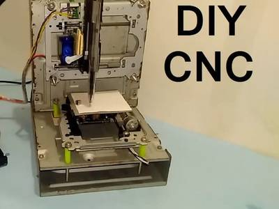

2016-12-08 - Nº 84

Editorial
Esta é a Newsletter Nº 84 que se apresenta com o mesmo formato que as anteriores. Se gostar da Newsletter partilhe-a!
Todas as Newsletters encontram-se indexadas no link.
Esta Newsletter tem os seguintes tópicos:
Esta semana a Google afirmou que vai usar 100% energias renováveis para alimentar os seus datacenters e escritórios já em 2017. O SIG Bluetooth adoptou oficialmente a versão 5 como ultima versão da especificação deste protocolo. Esta versão inclui maior alcance, velocidades maiores e largura de banda superior. Tem também melhorias significativas com outras tecnologias sem fio.
Na Newsletter desta semana apresentamos diversos projetos de maker assim como alguns modelos 3D que poderão ser úteis.
 João Alves ([email protected])
João Alves ([email protected])
O conteúdo da Newsletter encontra-se sob a licença  Creative Commons Attribution-NonCommercial-ShareAlike 4.0 International License.
Creative Commons Attribution-NonCommercial-ShareAlike 4.0 International License.
Novidades da Semana
Adoption of latest Bluetooth® specification propels interoperability, sets stage for transformative wireless connectivity
_"The Bluetooth Special Interest Group (SIG) officially adopted Bluetooth 5 as the latest version of the Bluetooth core specification this week. Key updates to Bluetooth 5 include longer range, faster speed, and larger broadcast message capacity, as well as improved interoperability and coexistence with other wireless technologies. Bluetooth 5 continues to advance the Internet of Things (IoT) experience by enabling simple and effortless interactions across the vast range of connected devices. [...]
We’re set to reach 100% renewable energy — and it’s just the beginning
"Every year people search on Google trillions of times; every minute people upload more than 400 hours of YouTube videos. All of that takes an incredible amount of processing power — which means energy. Our engineers have spent years perfecting Google's data centers, making them 50 percent more energy efficient than the industry average. But we still need a lot of energy to power the products and services that our users depend on. We began purchasing renewable energy to reduce our carbon footprint and address climate change — but it also makes business sense. I’m thrilled to announce that in 2017 Google will reach 100% renewable energy for our global operations — including both our data centers and offices. We were one of the first corporations to create large-scale, long-term contracts to buy renewable energy directly; we signed our first agreement to purchase all the electricity from a 114-megawatt wind farm in Iowa, in 2010. Today, we are the world’s largest corporate buyer of renewable power, with commitments reaching 2.6 gigawatts (2,600 megawatts) of wind and solar energy. That’s bigger than many large utilities and more than twice as much as the 1.21 gigawatts it took to send Marty McFly back to the future." [...]
Outras Notícias
- Microsoft, Qualcomm partnership will bring the full Windows 10 OS to ARM devices using emulation
- Earth's day lengthens by two milliseconds a century, astronomers find
- Open sourcing the Embedding Projector: a tool for visualizing high dimensional data
Ciência e Tecnologia
Printable electronics - New stamping technique creates functional features at nanoscale dimensions
"The next time you place your coffee order, imagine slapping onto your to-go cup a sticker that acts as an electronic decal, letting you know the precise temperature of your triple-venti no-foam latte. Someday, the high-tech stamping that produces such a sticker might also bring us food packaging that displays a digital countdown to warn of spoiling produce, or even a window pane that shows the day’s forecast, based on measurements of the weather conditions outside. Engineers at MIT have invented a fast, precise printing process that may make such electronic surfaces an inexpensive reality. In a paper published today in Science Advances, the researchers report that they have fabricated a stamp made from forests of carbon nanotubes that is able to print electronic inks onto rigid and flexible surfaces." [...]
IBM Research and Rice University Explore Watson-Powered Robot Aimed at Aiding Elderly and Caregivers
"IBM (NYSE: IBM) Research today announced the creation of the prototype IBM Multi-Purpose Eldercare Robot Assistant (IBM MERA) done in collaboration with Rice University. IBM MERA is a first of a kind Watson-enabled application designed to help assist the elderly and their caregivers. IBM Research also has plans to work with Sole Cooperativa, an independent healthcare provider in Italy, to instrument senior housing with sensors to monitor day-to-day activities of its residents." [...]
Our brains have a basic algorithm that enables our intelligence
"Our brains have a basic algorithm that enables us to not just recognize a traditional Thanksgiving meal, but the intelligence to ponder the broader implications of a bountiful harvest as well as good family and friends. “A relatively simple mathematical logic underlies our complex brain computations,” said Dr. Joe Z. Tsien, neuroscientist at the Medical College of Georgia at Augusta University, co-director of the Augusta University Brain and Behavior Discovery Institute and Georgia Research Alliance Eminent Scholar in Cognitive and Systems Neurobiology. Tsien is talking about his Theory of Connectivity, a fundamental principle for how our billions of neurons assemble and align not just to acquire knowledge, but to generalize and draw conclusions from it." [...]
University of Twente researchers able to study individual defects in transistors
"Previously it was only possible to study these flaws in large numbers. However, fundamental research conducted by University of Twente scientists has now made it possible to zoom in on defects and study them individually. In due course, this knowledge will be highly relevant to the further development of the semiconductor industry. The research results were published today in Scientific Reports, a leading scientific journal produced by the Nature Publishing Group. Computer chips typically contain numerous extremely small defects. There are often as many as ten billion defects per square centimetre. The bulk of these defects cause no problems in practice, but the large numbers involved pose enormous challenges for the industry. This is just one of the barriers to the further miniaturization of chips, based on existing technology. It is, therefore, vital to obtain a detailed understanding of how these defects arise, of where they are located, and of how they behave. Until now it has been impossible to study individual defects, due to the large number of defects on each chip, and the fact that closely spaced defects influence each other. For this reason, the defects were always studied in ensembles of several million at a time. However, this approach suffers from the drawback that it only yields a limited amount of information on individual defects. " [...]
Infrastructure data for everyone
"How much electricity flows through the grid? When and where? Where are the bottlenecks? What happens when wind turbines and solar cells feed in additional energy? The answer to these questions are essential for the global energy turnaround. However, for a valid planning, one first needs a solid understanding of the infrastructure. Researchers at the Technical University of Munich (TUM) are now collecting information via an open source platform accessible to everyone. Hundreds of volunteers are already underway, and their numbers are growing every day. Armed with the OpenGridMap app on their smart phones, they meander through Munich, Berlin, Tokyo and even Teheran. Just another cell phone game? “No, we aren’t chasing Pokémons,” reassures Jose Rivera, director of the OpenGridMap project. “What we are interested in is the electrical infrastructure: High-voltage and low-voltage power lines, transformer sub-stations, wind turbines and solar power plants.” Users of the app share photos and locations with a server housed in the Department of Computer Science at TU Munich. There, the information is analyzed, evaluated and ultimately loaded into the open source OpenStreetMap map system." [...]
New 'printone' tool allows users to create 3-D printed wind instruments in any shape or form
"A research team from Autodesk and Dartmouth College has developed a new interactive design tool called "Printone," which provides users with the ability to create functional 3-D printed wind instruments in any shape or form using interactive sound simulation feedback. The team designed 16 free-form wind instruments to play different melodies, including: a star that can play "Twinkle, Twinkle, Little Star," a bunny that can play "Little Peter Rabbit;" a snowman that can play "Jingle Bells;" and a dragon that can play "Puff the Magic Dragon." The team's research will be presented this week at the 9th ACM SIGGRAPH Conference and Exhibition on Computer Graphics and Interactive Techniques in Asia." [...]
New sensor technology for e-vehicle batteries
"Batteries for electric vehicles are expensive. This must change if the vehicles are to establish themselves in the market. RUB engineers are currently adjusting one important element. Engineers at Ruhr-Universität Bochum have developed a new concept for current and voltage sensors for batteries that might become particularly relevant for electric vehicles (EV). An EV battery is made up of individual blocks, each of which contain up to twelve cells. Typically, each cell is monitored by its own voltage sensor. Designed by Philip Dost, the new system requires only one single voltage sensor, thus reducing overall weight and costs." [...]
New material could lead to erasable and rewriteable optical chips
"A military drone flying on a reconnaissance mission is captured behind enemy lines, setting into motion a team of engineers who need to remotely delete sensitive information carried on the drone's chips. Because the chips are optical and not electronic, the engineers can now simply flash a beam of UV light onto the chip to instantly erase all content. Disaster averted. This James Bond-esque chip is closer to reality because of a new development in a nanomaterial developed by Yuebing Zheng, a professor of mechanical engineering and materials science and engineering in the Cockrell School of Engineering. His team described its findings in the journal Nano Letters on Nov. 10." [...]
Scientists develop robotic hand for people with quadriplegia
"Scientists have developed a mind-controlled robotic hand that allows people with certain types of spinal injuries to perform everyday tasks such as using a fork or drinking from a cup. The low-cost device was tested in Spain on six people with quadriplegia affecting their ability to grasp or manipulate objects. By wearing a cap that measures electric brain activity and eye movement the users were able to send signals to a tablet computer that controlled the glove-like device attached to their hand. Participants in the small-scale study were able to perform daily activities better with the robotic hand than without, according to results published Tuesday in the journal Science Robotics." [...]
Engineering researchers develop a process that could make big data and cloud storage more energy efficient
"As big data and cloud applications flourish, one of the grand challenges for future computing is finding energy-efficient methods for data storage. Magnetic material is commonly used for data storage — think of magnetic strips on the back of a credit card — and the ability to flip the “polarity” (magnetization direction) of magnetic particles that are retained for long periods of time without needing power is essential to nonvolatile magnetic memory. A group of researchers at the Virginia Commonwealth University School of Engineering has developed a process to bring about this flipping of magnetic “polarity.” The group’s method offers a significant reduction in energy required for big data and cloud memory storage." [...]
Scientists create ‘floating pixels’ using soundwaves and force fields
"Researchers at the Universities of Sussex and Bristol have used soundwaves to lift many tiny objects at once before spinning and flipping them using electric force fields. The technology – called JOLED - effectively turns tiny, multi-coloured spheres into real-life pixels, which can form into floating displays or bring computer game characters to life as physical objects. To be presented next week at a future technologies conference in Japan, the research opens up new possibilities for mobile and game designers, giving them a new way of representing digital information in a physical space." [...]
Self-learning software that builds itself
"Researchers at Lancaster University in England have developed a machine-learning system that can assemble code components into a program to meet goals set by the human developers. The resulting software can continue to learn and reconfigure itself to adapt to changing conditions without human intervention. The researchers used the designing of a web server as a test case for the runtime emergent software, or REx, and found not only that the resulting web server performed efficiently but that REx came up with some unexpected tricks." [...]
Stanford engineers create prototype chip just three atoms thick
"For more than 50 years, silicon chipmakers have devised inventive ways to switch electricity on and off, generating the digital ones and zeroes that encode words, pictures, movies and other forms of data. But as researchers think about electronics for the next 50 years, they’ve begun to look beyond silicon to new types of materials that occur in single layers only three atoms thick – far thinner than modern silicon chips – yet are able to control electricity more efficiently to create those digital ones and zeroes. Now a team led by Stanford electrical engineering Associate Professor Eric Pop has demonstrated how it might be possible to mass-produce such atomically thin materials and electronics. Why would this be useful? Because such thin materials would be transparent and flexible as well, in ways that would enable electronic devices that wouldn’t be possible to make with silicon." [...]
Modelos 3D
Com a disponibilidade de ferramentas que permitem dar azo a nossa imaginação na criação de peças 3D e espaços como o thingiverse para as publicar, esta rubrica apresenta alguns modelos selecionados que poderão ser úteis.
Cap that Hole
""_Customizes covers for holes in surfaces such as countertops, etc. Usage: Enter hole's dimensions: shape (circular/square/rectangular), dimensions, fillet radius; Define cover: overlap, thickness; Define plug dimensions: length, clearance; Choose if you like to have snaps or fins; Don't forget to TURN OFF "SHOW SLICE", so you'll get a full cap when you generate it. For best cover surface quality, print upside-down (cover on printing surface)" [...]
Customisable Flower Pot, bowl or vase
"I made this because I needed a square flower pot that was 75 cm at the top and 60 cm at the bottom. Such a flower pot fits perfectly in my HerbGarden hydroponic system. But why not make it parametric so that you can make the flower pot you need? You can choose size, what shape you want, if you want a brim at the top and if you want perforations at the bottom and/or at the sides. Because of the level of customisation you can make more than flower pots with this one. Basically a range of cups, vases and bowls. I usually print them 1.5 mm thick and with no support. The measures for my two hydroponic systems are: FreshGarden Max: Round, bottom = 56 mm, top = 71, height = 70 mm, brim and perforations on bottom and sides, 1.5 mm thick. HerbGarden (Tregren Herbie): Square, bottom = 60, top = 75, height = 75, no brim, no perforation on the sides, perforation at the bottom, 1.5 mm thick." [...]
OpenSCAD threads module
"An OpenSCAD module to draw ISO-standard metric and English threads, with a number of options." [...]
Projetos Maker
Diversos Projetos interessantes.
Bibble: A Smart Desk Light for Roommates
"The Bibble is a desk light designed to let your loved ones know where you are (or at least where you're scheduled to be). The lantern can sit on their desk, softly glowing a particular colour, depending on whether you are at home, school/work, or out. It uses IFTTT integration to search for keywords in your Google Calendar, triggering your NeoPixels to change colour." [...]
Arduino Pinball Machine
"This instructable was created in fulfillment of the project requirement of the Makecourse-Art at the University of South Florida (www.makecourse-art.com) Using half inch plywood, cut two 19" by 6" pieces with a one inch slope. The front-most piece is 10" by 5" and the back piece is 10" by 8". Drill 2 holes in the back piece. One in the lower right about .5" diameter, and the other about 2.5" above the bottom on the center about 9/16" diameter. On the same piece, drill 6 1/8" holes on the top but not in the middle. These will where the LED's are placed. Drill a 1" hole on the front piece on the right side. Feed the pinball launcher through the front hole. Put the spring on it and use a small 1" by 1" piece of wood with a .25" hole drilled through it afterward as a stopper. Then place a small rubber tip on the tip of the launcher. The base of the machine is 20" by 10"." [...]
Arduino Temperature Controller
"Control the temperature of your aquarium or greenhouse. The sensor (DS18b20) measures the temperature of your aquarium or greenhouse. The display shows the current temperature and the status: cooling or heating." [...]
DIY an Arduino Voting Machine
"This project is to teach you how to use simple components, such as buttons and LCD to create an Arduino-based voting machine.The highlight of this system is the Arduino IDE in the serial monitor used to perform polling operations,don’t need other external applications. Main features:• Each step of the polling operation is subject to the supervisor’s control.• Password activates the security system.• Voting results can be obtained immediately.•Voters know the candidates they vote for." [...]
Smartphone Controlled Car with Proportional Speed Control
"I have always loved RC cars, but sadly I got to buy one when I was no more a kid. But it wasn't as cool as I expected. So I made my own RC car that can be controlled using a smartphone app. Here I'm sharing a step by step guide you can follow to make your own Bluetooth controlled car with Proportional Speed Control. To complete this project, you should have some basic electronics knowledge. If you have never worked on Arduino then check out this instructable to learn the basics." [...]
Otto PLUS
"OttoPLUS would be the improved and advanced version of original #OttoDIY, the idea is to have the same base features DIY robot + Bluetooth control and programming + metal gear servo motors + rechargeable + modes activation + sensors + light moves + other outputs +...? The exciting part is that we are doing open development with makers and hackers around the world so we are open to ideas, not only from expert,s you can join us with , feedback, social share, testing or any other contribution that you might think of." [...]

Arduino Based Mini CNC 2D Plotter
"This project is about How to make a mini CNC machine from OLD SCRAP DVD Drives using Arduino as a brain of this machine and L293D Motor shield. It is very amazing to see how this tiny machine draw images so nicely with a good accuracy. Basically any image which you want to draw by this machine need to convert in Gcode file using INKSCAPE SOFTWARE. this Gcode stream on arduino via processing GCTRL program. and L293D Motor shield accordingly instruct stepper motor how to move, combine and synchronize motion of steppers ends in a good image. This machine have two axis X-AXIS & Y-AXIS. X-axis is plotting are, paper is place on X-axis. Y-axis holds the pen." [...]
Digital 3D printer filament counter using PS/2 mouse
"Ever wonder how much filament did you actually use for a project? Have an old mechanical ball mouse laying around waiting for recycling? Let's convert it into a filament counter with simple Arduino and 3D printed parts. The mechanical PS/2 mouse contains fairly high-resolution encoder wheels and a simple serial interface as well as electronics to process the quadrature input signals from the encoder wheels. There are Arduino libraries written to talk to the mouse and get the direction of the distance of rotation of the encoder wheels. By connecting the encoder wheel to a filament roller, we can track the actual usage of the filament for each project by using the Arduino and display the results in millimeter on a LCD display. Since the mouse outputs the relative position to its original position in both directions, the counter is able to accurately measure and actual usage of the filament even when the filament direction is reversed occasionally due to retraction." [...]
Stopwatch and Lap Time Counter
"This is a very simple project about a stopwatch using Arduino Nano (or Uno R3) and a MAX7219 LED display (8 Digits x 7 Segments). The first 4 digits of display show the time in seconds and tenth of seconds. The another 4 digits show the last lap time. Due to the number of digits available on display, the maximum time count is 999.9 seconds (16 minutes and 39.9 seconds) and with a really good accuracy comparing it with another stopwatches." #DS3231 [...]
<img src="PM84_AdjustingDualClockUsingDs3231O.jpg" alt="Adjusting dual clock using DS3231 on 1.8" ST7735 display" style="float: left; margin: 0 10px 10px 0;">
Adjusting dual clock using DS3231 on 1.8" ST7735 display
"This clock show you 2 clocks: local time and UTC/GMT time. It has 3 buttons for MENU/OK, increase and decrease value for hours, minutes, day in week, year, month, day, diference betwenn local time and UTC tome (GMT time)." [...]
Local and Remote Programmable Robotic Arm
"Let's develop step by step a project for controlling and programming a robotic arm, simulating the basic functions of an industrial robot. The purpose of this tutorial is to develop step by step a project for controlling and programming of a Robot Arm, simulating the basic functions of an industrial robot." [...]
Car Simulator Arduino Pedals
"I have a on going project to build a car-simulator and one goal is to get the feeling like sitting in a real racing-car. With this instruction I explain how I have build my pedals to my car simulator. Of course you can buy stuff like this but I want to build it cheap. My pedals have gas, brake and clutch and use a Arduino (Windows native drivers) to connect to usb port. Hope I can inspire you with my building and I meet you on a trackday in Project Cars!" [...]
VGA Blinking Lights
"This project consists of a a device capable of generating a (pseudo) random blinking lights pattern. The objective of this project is to turn old monitors, specially CRTs, into decorative objects. The VGA video generation is performed by the PIC counting cycle by cycle. At 20MHz the PIC executes one instruction cycle at each 200ns. It means that a whole VGA line (31,77us) shall last 159 cycles. This value is rounded up but close enough for a stable image (full detail) The VGA output is impedance and amplitude controlled. It can be achieved by doing some math. The values are not critical, though. Anything about 20% of the calculated values are good enough. The randomness is generated by using a Galois LFSR (Linear Feedback Shift Register) with a different seed for each line of 8 'dots'. The code was borrowed from PICLIST. The timing for colour changing is done counting frames on the last blank line of a screen. The interval time is formed by adding 22 with the 4 least significant bits of one of the random variables used to control the colour of the dots. This results in a time of .36 to .63 seconds for each change. And that's all." [...]
Tiny Time Watch
"To show the time you press the button on the watch face, and the time is then displayed for four seconds. It lights one LED to show the hour, and flashes another LED to show the minutes to the nearest five minutes, like the hour and minute hands on a clock. If only one LED lights up you know that both hands are pointing to the same hour mark. The Tiny Time watch uses the ATtiny85's built-in oscillator, fine-tuned to get it as accurate as possible, and my watch keeps time to within a couple of minutes over 24 hours. You can adjust the time by holding down the button for more than four seconds. It's powered by a CR2032 button cell, and I've used several techniques to reduce the current consumption, so the battery should last for over a month. The total component cost, excluding the PCB, is about £5/$5, and it's straightforward to build." [...]
SNA Junior
"DuWayne and I have been corresponding for a couple of years, sharing mutual interests. I was pleased to be able to give his work a shout in both the printed and 'spoken' version of my talk at this year's Four Days in May event in Dayton and - more importantly - to catch up with the man in person for a quick eyeball QSO. I also got a PCB for SNA Jr, which has been sitting on the bench for months - until last week. The SNA board finally bubbled up to the top of the pile and I looked around for the bits I needed to complete it. Perhaps I should explain (to those of you who don't know) what's involved..." [...]
LED Isis Wings (with non-functioning capacitive touch sensors)
"Here I sit after 1am finalizing this projects details after a week of barely any sleep while waiting for the glue on the first half of my LED lights to dry and I can't help but wonder if this particular project was worth the time, stress, pain, and money that was sunk into it. I love blinking lights, and adore props that incorporate them, so I can only hope that, after the exhaustion of college finals wear off, I will be able to appreciate this project more. If you feel that this particular project will be worth it, then here are the supplies that you'll want to have handy. (Keep in mind that this is currently a work in progress as the touch sensors are currently not functioning properly.)" [...]
Keyboard Clicker
"This instructable was created in fulfillment of the project requirement of the Makecourse at the University of South Florida (www.makecourse.com). For this project I chose to make a physical keyboard clicker. The reason I chose to make this is primarily for an undetectable and random way to macro. What it does can easily be accomplished with software. However software can be detected. It also is far too accurate when in use, even with randomization. In the future I would like to improve upon this. Mapping the whole keyboard electronically to mimic button presses." [...]
AC Current monitoring data logger
"Hi Everyone, welcome to my first instructable! By day I am a test engineer for a company that supplies industrial heating equipment, by night I am an avid technology hobbyist and DIY'er. Part of my work involves testing the performance of heaters, on this occasion I wanted to be able to monitor the RMS current draw of 8 devices over 1000hrs and log the data to graph the results later. I have access to a data logger but it was already committed to another project and I needed something low cost, so I decided to cobble together this basic datalogger. The project uses an Arduino Uno to read analogue sensors via analogue to digital converter (ADC) and records the data with a time stamp on an SD card. There is alot of theory and calculation involved in designing the circuits, so instead of explaining absolutely everything, I will just show you how to make it. If your interested in seeing the FULL hit then let me know in the comments and I will explain further." [...]
Thunder & Lightning Animation
"Children's Hospital of Pittsburgh has a wonderful O-scale train layout that represents scenes from the Harry Potter movies. There is a large castle at one end of the layout and I wanted to add an animation to the castle that would flash bright LEDs in concert with an audio track of claps of thunder. I have a good deal of experience with micro-controller controlled MP3 players including the VMUSIC2 and the DFPlayer. I opted to use the DFPlayer for this project as it works very well with an Arduino and is quite inexpensive. More importantly it is easy to control and can power a speaker without an additional amplifier. This project can be built on a piece of prototype board with point to point wiring. Add a bright LED bulb or three and a speaker to the Arduino and DFPlayer and you are ready to go!" [...]
Raspberry Pi Lightshow with Blynk Control
"I was searching through the net for some DIY light decoration project ideas. I came across with Lightshow Pi and decided to build my own version of light show with 8 AC Outputs, adding some features to make the whole system more user friendly for my parents to use at home. The whole system summed up in few words, a light show control box that runs light show in two mode: a normal sequence and music mode. The user control is done using Blynk App on smart devices. The music will be streamed via FM transmitter to house or car music system (I drew this idea from another LightshowPi project). You can also use a direct speaker instead of an FM transmitter." [...]
Low Cost 4 channel Wifi switch (IOT Application)
"Hello everyone, this is my first intractable and I am going to share my project of low cost 4 channel WiFi switch. My requirements: It should incur low cost as far as hardware is concerned. The device should be reliable as I would be using it to control lights at my home while I am on a vacation. I should get an update on my mobile device once the switch changes state." [...]
VGA Etch-a-Sketch With Arduino Uno
"When I was a child I have spent a lot of time playing with "Etch a Sketch", a classical game where you can draw sketches on a plastic board turning two wheels. Recently I realized that not only it can be reproduced in colors with an Arduino on a VGA monitor, but that I already have all the necessary hardware. AIl I need are few lines of code!" [...]
HandTalk
"The HANDTALK glove needs to be worn on the hand by the disabled and depending on the variation of the movements, the device will convert it intelligently into beep (can be voice too) and in a text. This message will be out from the beeper and LCD display. The HANDTALK glove senses the movements through the flex sensors which detect the different patterns of motion. The device can sense carefully each resistance and each movement by the hand. Currently the device can convert only few, but depending on the success of this device few more additional features maybe added later onto this expressive system. Technology has always been of great help to the disabled and given them a helping hand to allow them to live a normal and healthy life like others." [...]
Making-Of Sea Shell Sand Clock
"The year is coming to an end, the Holiday season is approaching. In case you are looking for a nice present: I have completed my version of a sand clock: a clock writing the time into sand. The idea is based on the famous ‘Plotclock’ by the Fab Lab Nürnberg (https://wiki.fablab-nuernberg.de/w/Ding:Plotclock). That Plotclock is using a whiteboard marker to write the time and erases it with a wiper ever minute: very cool idea!" [...]
Drawing Plotter
"I've already made a delta 3D printer which is awesome, the only thing that wasn't made by me was the Arduino program. This program was very long and complicated, so I've downloaded it from the Internet. I've started to think if I am able to also make it myself. But why should I start with something so hard, firstly let's make something easier - Plotter!" [...]
A round word clock (sort of)
"As I was making a word clock, based on another instructable ( http://www.instructables.com/id/My-Arduino-WordClock/ ), me and my sister were wondering whether a round design would be cool too. While searching the internet, I could not find a round word clock, so we decided to design/create one ourselves. The clock displays the time somewhat similar as on a regular word clock. There are two major differences, on a 'regular' word clock the hours are words. On our word clock they're numbers just like a normal clock. The minutes (in 5 minute steps) are replaced by a word on the clock and the location of the word provides extra information. Note that I use Dutch templates, but an English version should work too. Of course some changes to the software are required." [...]
Simple Calculator With Arduino MEGA
"Make a simple four function calculator with the Arduino MEGA." [...]
DIY Arduino Thief Cam
"Have you ever wondered about what was happening when your were at work? What your pets were doing, or even if you were getting robbed? But, you do not went to spend hundreds of dollars on surveillance systems. Well, if you follow my instructions and purchase a few materials... YOU CAN BUILD YOUR OWN, FULLY FUNCTIONING THIEF CAM FOR ONLY $40! Hi my name is Zack. I am a 12 year old tech builder. Since I was little, I have always had a love for inventing. When I was 11 I discovered the website Instructables. From then on I have learned so much. I would like to give a big thanks to Instructables for all of the people they have helped including me. THANK YOU!!! Anyway, this is my first Instructable! Ya! In this project I will be creating a DIY Arduino Thief Cam. Besides for utility purposes, it can also be used for spying on people. Hee hee. Wait, did I say that out loud..?" [...]
Creating a 2m Fm Repeater with a Raspberry Pi (B) and a RTL dongle
"For the purpose of this configuration I expect your Raspberry pi to be connected to the internet. How will this repeater work. This configuration was done with the latest Raspbian Os for Raspberry Pi downloaded from here https://www.raspberrypi.org/downloads/ I used my original Raspberry Pi B+ and also repeated this on a Banana Pi as I need a hard drive to compile gnuradio for later SDR use. I will be using a rtl dongle to receive my input signal on 70cm frequency configurable on the amateur 2m or 70cm band. The receiver signal will then be demodulated and re transmitted with a DSP Library simulating a FM Signal using a GPIO pin on the Raspberry as an transmitter." [...]
Arduino Motion Detection Light
"Hi, this is my new Arduino Motion Detection Light. It is powered by an 9v supply for the arduino and 5w for light. If a man or an animal pass through the PIR sensor, it detects and will start the relay(as the light turns on). If there is no detection, then it will stop the relay(as the light turns off). You can also attach to walls with the hanging tie.This project is very usefull in our life. You can attach it to your room or bathroom or in a bedroom........" [...]
DC Motor & Direction Controller with Brake using MC33035
"3AMP DC Motor speed and direction controller using MC33035 IC from on semiconductor, though the MC33035 was designed to control brushless DC motor , it may also be used to control DC brush type motors. MC33035 driving a Mosfets based H-Bridge affording minimal parts count to operate a brush type motor. On board potentiometer provided for speed control, slide switch for direction control and brake, On board jumper available to enable the chip. The controller function in normal manner with a PWM frequency of approximately 25Khz. Motor speed is controlled by adjusting the voltage presented to the non inverting input of the error amplifier establishing the PWM’s slice or reference level. Cycle by cycle current limiting of the motor is accomplished by sensing the voltage across the shunt resistor to the ground of H-bridge. The overcurrent sense circuit makes it possible to reverse the direction of the motor, using normal forward/reverse switch, on the fly and not have to completely stop it before reversing." [...]
NeoPixel 24 & HC-RS04 Sonar Support
"I am currently working on a project that involve using a HC-SR04 Sonar sensor to control the lights of a Adafruit NeoPixel 24 Leds Ring. Yesterday I quickly designed a 3D model with DesignSpark Mechanical that I am using to center the sensor inside the led ring. I have also added a few spaces where the cable can pass though without disturbing the flat surface." [...]
Electronic dice with slowdown - NE555 & CD4017
"Have your dice ever fallen off the table after you rolled them when playing a board game? Yes? Say no more because in this instructable I will show you how I made electronic dice with the famous integrated circuits NE555 and CD4017!" [...]
That's all Folks!